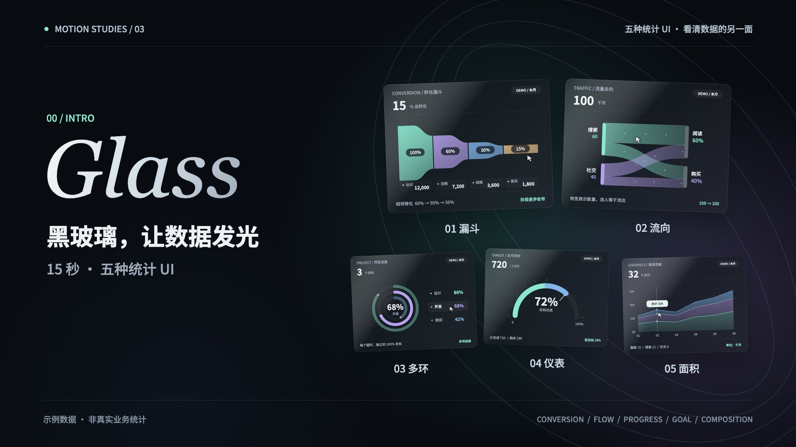

▶ 观看 15 秒影片01 / THE PLAYGROUND
同一组数据 · 亲手试一试CONVERSION
Funnel
漏斗看转化
哪一步，人变少了？
滑过阶段，查看人数与转化。
鼠标悬停 · 触屏点按 · 方向键切换数据
02 / THE FILM
下载 MP4 ↗15 seconds.
Five perspectives.
看见数字，也看清方向。
1920 × 1080 / 60fps / 合成配乐
03 / BEHIND THE MOTION
从代码，到画面。
Canvas 绘制图表，时间驱动动画；Python 合成配乐，FFmpeg 输出影片。
网页复用影片中的绘制逻辑，悬停、点击与键盘接管高亮状态。